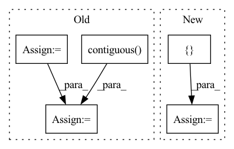

Pattern ID :375

Before Change
for i in range(len(self.cfg.strides)):
voxel_features_i, voxel_coords_i = out[i]
voxel_coords_i = voxel_coords_i.unsqueeze(0).contiguous()
voxel_features_i = voxel_features_i.unsqueeze(0).permute(0, 2, 1).contiguous()
keypoints_xyz = keypoints_xyz.unsqueeze(0).contiguous()
_, out = self.pnets[i](voxel_coords_i, voxel_features_i, keypoints_xyz)
return out
After Change
points, features, coordinates, voxel_population = self.voxelize(points)
cnn_out = self.cnn(features, coordinates, batch_size=1)
point_xyz, point_features = torch.split(points, [3, 1], dim=-1)
cnn_out = [(point_xyz, point_features)] + cnn_out
keypoint_xyz, keypoint_features = self.sample_keypoints(point_xyz, point_features)
keypoint_xyz = keypoint_xyz.unsqueeze(0).contiguous()
pnet_out = self.pnet_forward(cnn_out, keypoint_xyz)
return pnet_out
In pattern: SUPERPATTERN
Frequency: 3
Non-data size: 5
Instances
Fragment ID: 1406135
Project Name: jhultman/vision3d
Commit Name: 1d8a72fc38c04ef4a2ca6516f91c20cd89d4b46d
Time: 2020-02-03
Author: 27909223+jhultman@users.noreply.github.com
File Name: pvrcnn/main.py
M Class Name: PV_RCNN
N Class Name: PV_RCNN
M Method Name: forward(2)
N Method Name: forward(2)
M Parent Class: nn.Module
N Parent Class: nn.Module
M File Name: pvrcnn/main.py
N File Name: pvrcnn/main.py
M Start Line: 141
M End Line: 151
N Start Line: 161
N End Line: 167
'>
Before Change
indices_and_rois = torch.cat([roi_indices[:, None], rois], dim=1)
xy_indices_and_rois = indices_and_rois[:, [0, 1, 2, 3, 4]]
indices_and_rois = xy_indices_and_rois.contiguous()
// 利用建议框对公用特征层进行截取
pool = self.roi(x, indices_and_rois)
pool = pool.view(pool.size(0), -1)
After Change
roi_indices = roi_indices.cuda()
rois = rois.cuda()
rois_feature_map = torch.zeros_like(rois)
rois_feature_map[:, [0,2]] = rois[:, [0,2]] / img_size[1] * x.size()[3]
rois_feature_map[:, [1,3]] = rois[:, [1,3]] / img_size[0] * x.size()[2]
indices_and_rois = torch.cat([roi_indices[:, None], rois_feature_map], dim=1)
//-----------------------------------//
// 利用建议框对公用特征层进行截取
//-----------------------------------//
pool = self.roi(x, indices_and_rois)
//-----------------------------------//
// 利用classifier网络进行特征提取
//-----------------------------------//
pool = pool.view(pool.size(0), -1)
// 当输入为一张图片的时候，这里获得的f7的shape为[300, 4096]
fc7 = self.classifier(pool)
roi_cls_locs = self.cls_loc(fc7)
roi_scores = self.score(fc7)
roi_cls_locs = roi_cls_locs.view(n, -1, roi_cls_locs.size(1))
roi_scores = roi_scores.view(n, -1, roi_scores.size(1))
return roi_cls_locs, roi_scores
'>
Fragment ID: 1406128
Project Name: bubbliiiing/faster-rcnn-pytorch
Commit Name: d456f02a402fd8cf8db1d991aa612439b3c0ffb2
Time: 2021-01-30
Author: 47347516+bubbliiiing@users.noreply.github.com
File Name: nets/classifier.py
M Class Name: VGG16RoIHead
N Class Name: VGG16RoIHead
M Method Name: forward(5)
N Method Name: forward(4)
M Parent Class: nn.Module
N Parent Class: nn.Module
M File Name: nets/classifier.py
N File Name: nets/classifier.py
M Start Line: 31
M End Line: 39
N Start Line: 33
N End Line: 59
'>
Before Change
indices_and_rois = torch.cat([roi_indices[:, None], rois], dim=1)
xy_indices_and_rois = indices_and_rois[:, [0, 1, 2, 3, 4]]
indices_and_rois = xy_indices_and_rois.contiguous()
// 利用建议框对公用特征层进行截取
pool = self.roi(x, indices_and_rois)
fc7 = self.classifier(pool)
After Change
roi_indices = roi_indices.cuda()
rois = rois.cuda()
rois_feature_map = torch.zeros_like(rois)
rois_feature_map[:, [0,2]] = rois[:, [0,2]] / img_size[1] * x.size()[3]
rois_feature_map[:, [1,3]] = rois[:, [1,3]] / img_size[0] * x.size()[2]
indices_and_rois = torch.cat([roi_indices[:, None], rois_feature_map], dim=1)
//-----------------------------------//
// 利用建议框对公用特征层进行截取
//-----------------------------------//
pool = self.roi(x, indices_and_rois)
//-----------------------------------//
// 利用classifier网络进行特征提取
//-----------------------------------//
fc7 = self.classifier(pool)
// 当输入为一张图片的时候，这里获得的f7的shape为[300, 2048]
fc7 = fc7.view(fc7.size(0), -1)
roi_cls_locs = self.cls_loc(fc7)
roi_scores = self.score(fc7)
roi_cls_locs = roi_cls_locs.view(n, -1, roi_cls_locs.size(1))
roi_scores = roi_scores.view(n, -1, roi_scores.size(1))
return roi_cls_locs, roi_scores
def normal_init(m, mean, stddev, truncated=False):
'>
Fragment ID: 1406139
Project Name: bubbliiiing/faster-rcnn-pytorch
Commit Name: d456f02a402fd8cf8db1d991aa612439b3c0ffb2
Time: 2021-01-30
Author: 47347516+bubbliiiing@users.noreply.github.com
File Name: nets/classifier.py
M Class Name: Resnet50RoIHead
N Class Name: Resnet50RoIHead
M Method Name: forward(5)
N Method Name: forward(4)
M Parent Class: nn.Module
N Parent Class: nn.Module
M File Name: nets/classifier.py
N File Name: nets/classifier.py
M Start Line: 68
M End Line: 77
N Start Line: 82
N End Line: 107